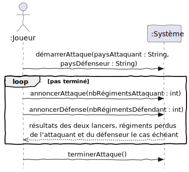
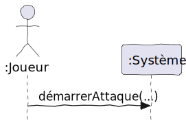
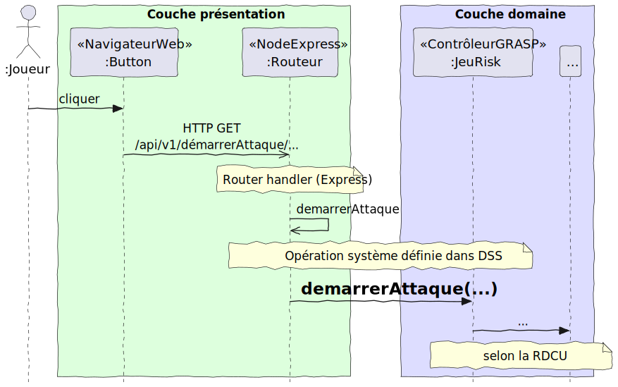

Un diagramme de séquence système (DSS) est un diagramme UML (diagramme de séquence) limité à un acteur (provenant du scénario d’un cas d’utilisation) et le Système. Les DSS sont expliqués en détail dans le chapitre 10 , mais voici des points importants pour la méthodologie de ce manuel :
- Le DSS a toujours un titre.
- L’acteur est indiqué dans la notation par un bonhomme et est représenté comme une instance de la classe du bonhomme, comme
:Joueurdans la figure 5.1 (le « : » signifie une instance). - Le Système est un objet (une instance
:Système) et n’est jamais détaillé plus. - Le but du DSS est de définir des opérations système (Application Programming Interface) du système ; il s’agit d’une conception de haut niveau.
- Le côté acteur du DSS n’est pas un acteur tout seul, mais une couche logicielle de présentation, comme une interface graphique ou un logiciel qui peut reconnaître la parole. Cette couche reconnaît des gestes de l’acteur (par exemple un clic sur un bouton dans l’interface, une demande « Hé Siri », etc.) et envoie une opération système.
- Puisque la couche présentation reçoit des informations des êtres humains, les opérations système ont des arguments de type primitif. Il est difficile pour un utilisateur de spécifier une référence (pointeur en mémoire) à un objet. Alors, on peut donner le nom (de type
String) d’un morceau de musique à jouer, ou spécifier une quantité (de typeInteger). - Puisque les types des arguments sont importants, on les spécifie dans les opérations système du DSS.
- Un message de retour (ligne pointillée avec flèche ouverte) vers l’acteur représente la communication des informations précises, par exemple les valeurs des dés dans l’attaque. Puisque la couche présentation a beaucoup de moyens pour afficher ces informations, on ne va pas spécifier les messages de retour comme des méthodes.
5.1 Exemple : DSS pour Attaquer un pays
La figure 5.1 est un exemple de DSS pour le cas d’utilisation Attaquer un pays. Vous pouvez noter tous les détails (titre, arguments, types).

5.2 Les DSS font abstraction de la couche présentation
Le but du DSS est de se concentrer sur l’API (les opérations système) de la solution. Dans ce sens, c’est une conception de haut niveau. Le « Système » est modélisé comme une boîte noire. Par exemple, dans la figure 5.2 il y a l’acteur, le Système et une opération système. On ne rentre pas dans les détails, bien qu’ils existent et sont importants.

Plus tard, lorsque c’est le moment d’implémenter le code, les détails importants seront à respecter. Il faut faire attention aux principes de la séparation des couches présentation et domaine. Par exemple, la figure 5.3 rentre dans les détails de ce qui se passe réellement dans une opération système quand la solution fonctionne avec un service web :
- D’abord, l’acteur clique sur un bouton ;
- Ce clic se transforme en service REST ;
- Un routeur transforme l’appel REST en une opération système envoyée à un contrôleur GRASP. Notez que c’est un objet du domaine qui reçoit l’opération système – c’est l’essence du principe GRASP Contrôleur ;
- Le contrôleur GRASP dirige la suite, selon la solution proposée dans la réalisation de cas d’utilisation (RDCU).

La figure 5.3 est à titre d’information seulement. Un DSS ne rentre pas dans tous ces détails.
5.3 FAQ DSS
5.3.1 Faut-il une opération système après une boucle ?
L’opération système terminerAttaque sert pour signaler la fin de la boucle. Le système saura que l’acteur ne veut plus répéter les actions dans la boucle. Mais elle permet aussi de faire des calculs concernant ce qui s’est passé dans la boucle, p. ex. pour déterminer qui contrôle quel pays après les attaques.
Cependant, si vous avez une boucle pour indiquer la possibilité de répéter une action (p. ex. ajouter des produits dans un système d’inventaire) et vous n’avez pas besoin de faire un calcul à la fin, alors une opération système pour terminer une telle boucle n’est pas nécessaire (surtout avec une application web).
5.3.3 Est-ce normal d’avoir une opération système avec beaucoup d’arguments (de type primitif) ?
Il n’est pas conseillé de passer des objets du domaine comme argument, puisque c’est la couche présentation qui invoque l’opération système. La couche présentation n’est pas censée manipuler directement les objets dans la couche domaine, sinon elle empiète sur les responsabilités de la couche domaine.
Une solution pour réduire le nombre d’arguments sans utiliser un objet du domaine est d’appliquer un réusinage pour le smell nommé Long Parameter List, par exemple Introduce Parameter Object. Notez que l’objet de paramètres que vous introduisez n’est pas un objet (classe) du domaine ! La distinction est importante, car la logique d’affaires demeure dans la couche domaine. En TypeScript, une fonction peut être définie avec un objet de paramètre. Cet exemple montre même comment on peut « déstructurer » l’objet pour déclarer les variables utilisées dans la fonction :
// inspiré de https://leanpub.com/essentialtypescript/read
function compteARebours({ initial: number, final: final = 0,
increment: increment = 1, initial: actuel }) {
while (actuel >= final) {
console.log(actuel);
actuel -= increment
}
}
compteARebours({ initial: 20 });
compteARebours({ initial: 20, increment: 2, final: 4 });5.3.4 Ne serait-il pas plus simple de passer l’objet body de la page web au contrôleur GRASP ?
Dans un sens ça serait plus simple (pour le code de la couche présentation). Cependant, nous voulons séparer les couches pour favoriser le remplacement de la couche présentation, par exemple à travers une application iOS ou Android.
Si vous mettez la logique de la couche présentation (décortiquer un formulaire web) dans la couche domaine (le contrôleur GRASP), ça ne respecte pas les responsabilités des couches. Imaginez un tel contrôleur GRASP si vous aviez trois types d’application frontale (navigateur web, application iOS et application Android). Le contrôleur GRASP recevra des représentations de « formulaire » de chaque couche présentation différente. En passant, l’objet body n’a rien à voir avec une interface Android ! Ce pauvre contrôleur serait obligé de connaître alors toutes les trois formes (web, iOS, Android) et ainsi sa cohésion sera beaucoup plus faible. Pour respecter les responsabilités, on laisse la couche présentation faire le décorticage et construire une opération système selon l’API définie dans le DSS. Cela simplifie aussi le contrôleur GRASP.
5.3.2 Comment faire si un cas d’utilisation a des scénarios alternatifs?
Fait-on plusieurs DSS (un pour chaque scénario) ou utilise-t-on la notation UML (des blocs
optetalt) pour montrer des flots différents dans le même DSS ?Un objectif de faire un DSS est de définir les opérations système. Donc, on peut se poser la question suivante : les scénarios alternatifs impliquent-ils une ou plusieurs opérations système n’ayant pas encore été définies ? Si la réponse est non, on peut ignorer les scénarios alternatifs dans le DSS. Par contre, si la réponse est oui, il est essentiel de définir ces opérations système dans un DSS. Quant au choix de faire des DSS séparés ou d’utiliser la notation UML pour montrer les flots différents sur le même DSS, ça dépend de la complexité de la logique des flots. Un DSS devrait être facile à comprendre. C’est à vous de juger si votre DSS avec des
optoualtest assez simple ou fait du spaghetti. Utilisez un autre DSS (ou plusieurs) ayant le nom des scénarios alternatifs si cela vous semble plus clair.